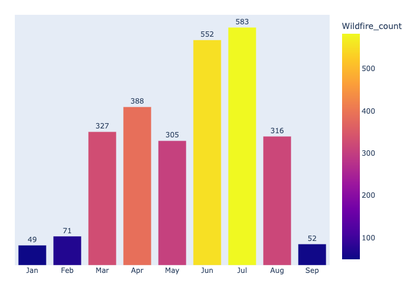

2021 US Wildfires Analysis Charts
Top 20 States by Wildfires
Grouping by state, it can be concluded that majority of wildfires incidents happen in a couple of states, with Montanta, Idaho, and Arizona being on the top of the list, respectively. Suprisingly, California comes in fourth, with Montana having more then twice the amount of incidents

Acres Burned vs Fire Duration
Wildfires burned more acres the longer the duration of the fire in the beginning stage of the fire. Most of the fires, after around 20 days, were subdued and under control with only a handful still increasing in the size of acres burned. After 100 days, all fires in our dataset were under control with minimal burning.

Wildfires by Month
Looking at the data grouped by month, We can clearly see that the number of wildfires in winter is relatively low and that it significantly increases in the summer, especially in June and July

Top Causes
Square plot with the top causes of wildfires shows us that the biggest cause of wildfires is lighting. For a good chunk of it, the cause of the fire is not known.